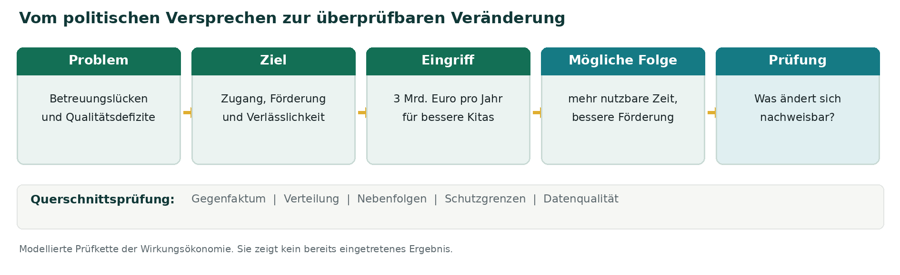

In diesem Beitrag: Wirkungscheck, Politikfelder und Quellen
- 1. Was die Grünen vorgelegt haben - und was noch nicht
- 2. Wachstum ist eine Zahl. Wohlstand ist ein Zustand.
- 3. Eine Demokratie funktioniert nicht allein durch gute Kommunikation
- 4. Energie, Industrie und Kreisläufe: Der Systemnutzen entscheidet
- 5. Der Staat als erster Kunde - aber für welche Ergebnisse?
- 6. Bürokratieabbau darf nicht zum Datenabbau werden
- 7. Souveränität, China und digitale Plattformmacht
- 8. Wer bezahlt? Wer profitiert? Und wer wird entlastet?
- 9. Arbeitswelt, KI und Care: Die Leistungslücke der heutigen Ordnung
- 10. Bildung, Gesundheit, Pflege und Rente: Prävention vor Reparatur
- 11. Demokratieschutz braucht Rechtsstaat - und wirksame Institutionen
- 12. Ein Praxistest: Was müsste die Kita-Milliarde wirklich bewirken?
- 13. Der Wirkungscheck, den politische Programme bestehen müssen
- Erstens: Das Problem muss bewiesen und begrenzt sein.
- Zweitens: Das Ziel braucht einen beobachtbaren Zustand.
- Drittens: Echte Alternativen gehören auf denselben Prüfstand.
- Viertens: Nebenfolgen und Verteilung dürfen nicht verschwinden.
- Fünftens: Schutzgrenzen sind keine verrechenbaren Nebensätze.
- Sechstens: Entscheidungen brauchen eine Lernschleife.
- 14. Meine Einordnung: Entscheidend ist die nächste Übersetzung
- Quellen und methodischer Hinweis
Ein Kindergeburtstag. Ein Bus, der nicht fährt. Ein Antrag, der seit Monaten bearbeitet wird. Ein Betrieb, der nicht weiß, wie er die nächste Investition bezahlen soll. Ein Pflegeplatz, dessen Eigenanteil die Rente übersteigt. Das sind ganz unterschiedliche Probleme. Gemeinsam ist ihnen, dass sie im Alltag entschieden werden und dass eine steigende Wachstumszahl allein sie nicht beseitigt.
Mit der Sorge, dass selbst ein Kindergeburtstag unerschwinglich wird, beginnt der wirtschaftspolitische Teil des neuen Grünen-Papiers. Die Partei verbindet diese Alltagserfahrung mit einer größeren Diagnose: Viele Menschen zweifeln daran, dass wirtschaftlicher Fortschritt bei ihnen ankommt und dass staatliche Institutionen ihre Probleme lösen. Daraus entsteht eine politische Frage, die über Parteigrenzen hinausreicht: Was muss ein Land eigentlich verbessern, damit die Menschen es merken? [1][3]
Die Wirkungsökonomie nimmt diesen Einstieg ernst. Sie unterscheidet zwischen Aktivität und Wirkung: Ein Staat kann Geld ausgeben, ein Unternehmen investieren und eine Volkswirtschaft wachsen - ohne dass die entscheidenden Zustände besser werden. Umgekehrt kann frühe Prävention große spätere Schäden vermeiden, ohne sofort in einer spektakulären Produktionsstatistik aufzutauchen. Genau diese Unterscheidung bestimmt den folgenden Wirkungscheck. [10]
1. Was die Grünen vorgelegt haben - und was noch nicht
Der Plan besteht aus zwei Texten. „Erneuern wir das Versprechen unserer Demokratie!“ befasst sich mit einer Staatsreform, dem Schutz demokratischer Institutionen und der politischen Praxis. „Zum Besseren. Neues Wachstum für unser Land.“ entwickelt auf 18 Textseiten eine wirtschafts- und sozialpolitische Linie. Der zweite Antrag bündelt drei große Hebel: Innovation und Erneuerung im Inland, Schutz vor unfairer Konkurrenz und gefährlichen Abhängigkeiten sowie eine gerechtere Verteilung des erwirtschafteten Wohlstands. [1][2][3]
Beides ist bewusst miteinander verbunden: Wenn Bürgerinnen und Bürger im Alltag keine Handlungsfähigkeit erfahren, leidet auch das Vertrauen in den demokratischen Staat. Umgekehrt brauchen Unternehmen verlässliche Institutionen, Rechtssicherheit und öffentliche Infrastruktur. Der Antrag beschreibt damit nicht bloß Einzelressorts, sondern ein Geflecht wechselseitiger Bedingungen. Das ist die richtige Analyseeinheit für eine Wirkungsprüfung: das verbundene System Mensch, Planet und Demokratie - nicht ein addierter Wunschzettel. [2][3][10]
Die Texte enthalten durchaus präzise Einzelforderungen. Sie enthalten jedoch kein vollständiges Budget, kein konsistentes Wirkungsmodell für jede Maßnahme und keine ex ante ausgewiesene Netto-Wirkungsbilanz. Ein Leitantrag muss noch kein Gesetzentwurf sein. Für eine spätere Regierungs- oder Gesetzespolitik würden diese Konkretisierungen allerdings zum Prüfmaßstab.
2. Wachstum ist eine Zahl. Wohlstand ist ein Zustand.
Bemerkenswert ist eine Passage, in der das wirtschaftspolitische Papier selbst ein klassisches Problem des Bruttoinlandsprodukts anspricht: Auch wenn Wälder verschwinden oder Kosten auf andere verlagert werden, kann wirtschaftliche Aktivität statistisch steigen. Zugleich bezeichnet der Antrag Wachstum als wichtige Voraussetzung für Investitionen, Jobs und Sozialfinanzierung. Hier liegt der entscheidende begriffliche Unterschied zur Wirkungsökonomie. [3]
Im neuen Grünen-Entwurf ist Wachstum weiterhin ein zentrales politisches Mittel und ein ökonomischer Erfolgsausweis. In der Wirkungsökonomie bleibt wirtschaftliche Aktivität eine wichtige Messgröße, aber sie ist kein ausreichender Maßstab für Wohlstand. Das Ziel heißt positive Netto-Wirkung für Mensch, Planet und Demokratie - einschließlich Verteilung, Langfristfolgen und nicht kompensierbarer Schutzgrenzen. [10][11]
Der Unterschied lässt sich an einer alten Schule erklären. Eine Stadt kann den Abriss, den Neubau, Zwischenlösungen und die späteren Reparaturen bezahlen. Jede Rechnung erzeugt Umsatz. Besser geworden ist der Zustand aber erst, wenn Kinder verlässlich Unterricht haben, Gebäude gesund und nutzbar sind, Wege zumutbar bleiben und die Kommune nicht in die nächste Kostenfalle läuft. Die reale Verbesserung ist der Maßstab, nicht die Menge der Rechnungen.
Die OECD arbeitet bereits mit einem breiteren Wohlstandsrahmen, der Lebensqualität, Ungleichheit, Umwelt und Zukunftsressourcen untersucht. Das Rad muss für eine politische Wirkungsprüfung also nicht neu erfunden werden. Die zusätzliche Aufgabe ist, diese Daten verlässlich in konkrete Entscheidungen und spätere Korrekturen einzubauen. [9][10]
Der Grünen-Text öffnet diese Debatte, wenn er ökonomische, soziale und ökologische Ziele miteinander verbindet. Eine vollständige Antwort müsste zusätzlich klären, welcher Zustand wachsen soll, welche Ressourcen dafür nötig sind, welche Schäden dabei entstehen, wer profitiert und welche Entwicklung auch ohne die vorgeschlagene Maßnahme stattgefunden hätte.
Mehr Wachstum sagt, dass sich die wirtschaftliche Aktivität verändert. Mehr Wohlstand muss zeigen, was für Menschen, Lebensgrundlagen und demokratische Handlungsfähigkeit besser geworden ist.
3. Eine Demokratie funktioniert nicht allein durch gute Kommunikation
Im Demokratieantrag sprechen die Grünen erstaunlich deutlich über die Leistungsfähigkeit des Staates und über eigenes politisches Verhalten. Sie fordern mehr Gestaltungsmöglichkeiten für Kommunen, verlässliche Bürgerbeteiligung, mehr Transparenz im Lobbybereich und eine politische Praxis, die den Alltag der Menschen wieder erreicht. Zugleich rücken sie rechtliche Abwehrinstrumente gegen verfassungsfeindliche Bestrebungen in den Blick. [2]
Für die Wirkungsökonomie ist der erste Teil genauso bedeutsam wie der zweite: Demokratie ist eine gelebte Zustandsqualität. Sie zeigt sich nicht nur in Wahltagen und Geschäftsordnungen, sondern auch darin, ob Menschen Anträge bewältigen, Leistungen erhalten, Behörden nachvollziehen, sich beteiligen und Fehler korrigieren lassen können. Wenn eine Kommune das Schwimmbad schließen muss, weil dauerhaft Mittel fehlen, entsteht ein anderes Alltagserlebnis als bei einer Kommune, die ihr öffentliches Angebot erhalten kann.
Die Forderung nach einer grundlegenden Neuordnung der Kommunalfinanzen zielt daher auf einen systemischen Engpass. Ein Landkreis mit vielen übertragenen Aufgaben, aber ohne ausreichenden eigenen Spielraum kann seine Leistung kaum verbessern. Wirkungsökonomisch müsste man beobachten, ob aus einer veränderten Finanzverteilung kürzere Wege, weniger Leistungsausfälle, intakte Infrastruktur und stärkere Teilhabe entstehen - und nicht nur, ob mehr Geld auf einem kommunalen Konto ankommt. [2]
Ähnliches gilt für Bürgerräte. Zahl und Teilnahmequote sind wichtige Verfahrensdaten, aber noch keine demokratische Wirkung. Entscheidend ist, welche Informationen und Perspektiven in Entscheidungen einfließen, wie Empfehlungen beantwortet werden und ob die Beteiligung auch Menschen erreicht, die sonst nicht gehört werden. Die demokratische Entscheidungshoheit des Parlaments bleibt dabei erhalten.
Der Antrag setzt auch auf persönliche Begegnung statt bloßer politischer Ansprache. Das ist als Kommunikationsansatz dokumentiert. Aus wirkungsökonomischer Sicht sind Reichweite, Veranstaltungszahl und Sympathie noch kein Nachweis für mehr Vertrauen. Dafür müsste untersucht werden, ob Erfahrungen mit staatlicher Fairness, Informationen, Beteiligung und Lösungsfähigkeit tatsächlich besser werden. Auch begründete Kritik an Institutionen gehört zu einer gesunden Demokratie. [2][10]
4. Energie, Industrie und Kreisläufe: Der Systemnutzen entscheidet
Im Wirtschaftsantrag bilden erneuerbare Energien, Netze, Speicher, klimafreundliche Industrie und Kreislaufwirtschaft ein gemeinsames Modernisierungsprogramm. Die Grünen verbinden diese Bereiche mit preiswerterer Energie, neuen Märkten, regionaler Wertschöpfung und weniger Abhängigkeit von importierten Rohstoffen und fossilen Energieträgern. Für energieintensive Unternehmen schlagen sie unter anderem Klimaschutzverträge, Leitmärkte und einen Investitionsmechanismus im Zusammenhang mit kostenlosen Emissionszertifikaten vor. [3][4]
Ein solcher Zusammenhang lässt sich nicht allein an der Gestehung einer Kilowattstunde prüfen. Für ein funktionierendes Energiesystem zählen zusätzlich Netzausbau, Speicher, Flexibilität, Finanzierung, Absicherung von Engpässen, Materialbedarf, Ausfallrisiken und Importabhängigkeiten. Die Rechnung muss die relevanten Systemkosten und die systemischen Vorteile erfassen, über geeignete Zeiträume und bei gleichen Annahmen für verschiedene Optionen. Das gilt für erneuerbare wie für konventionelle Technologien.
Ein Beispiel ist die industrielle Wärmewende. Ein Betrieb kann einen elektrischen Prozess wirtschaftlich sinnvoll umstellen, wenn Netzanschluss, Stromverfügbarkeit, Anlagenlebensdauer, Lastmanagement und Abnehmer zusammenpassen. Fehlt einer dieser Bausteine, hilft ihm der günstige Durchschnittspreis einer Erzeugungstechnologie nicht. Umgekehrt kann die Umstellung die Nachfrage nach importiertem Brennstoff senken und damit zusätzliche Resilienzgewinne erzeugen. Die Wirkung entsteht im Zusammenspiel, nicht im Prospekt einer einzelnen Anlage.
Die vorgeschlagene Bindung kostenloser Emissionszertifikate an Transformationsinvestitionen verlangt deshalb eine präzise Ex-ante-Prüfung: Welche Investitionen entstehen zusätzlich? Welche wären ohnehin gekommen? Wie werden Verzögerungen, Produktionsverlagerung und Fehlinvestitionen erkannt? Wer finanziert die Umstellung und übernimmt Risiken? Wie verhalten sich die Anreize zum EU-Emissionshandel und zu bestehenden Förderinstrumenten? Der Antrag nennt einen Mechanismus. Seine Netto-Wirkung ist damit noch nicht belegt. [4]
Bei der Kreislaufwirtschaft gilt dieselbe Logik. Mehr Recyclingquote allein sagt wenig, wenn wertvolle Materialien an Qualität verlieren, zusätzliche Energie benötigt wird oder Schadstoffe im Kreislauf bleiben. Gute Kreislaufwirtschaft muss Primärrohstoffe tatsächlich ersetzen, Produktsicherheit sichern und Lieferkettenrisiken reduzieren. Nur so werden aus Materialströmen reale Verbesserungen.
5. Der Staat als erster Kunde - aber für welche Ergebnisse?
Statt einzelne Großprojekte dauerhaft abzusichern, wollen die Grünen missionsorientierte Industriepolitik, Reallabore, Forschungstransfer, europäische Kapitalmärkte und öffentliche Nachfrage für neue Technologien. Öffentliche Beschaffung erscheint im Papier als Instrument, das Märkte für Innovation öffnen soll. Dazu kommen Erleichterungen für Gründungen, Wachstumsfinanzierung und Mitarbeiterbeteiligung. [4]
Dahinter steckt ein plausibler Wirkmechanismus: Ein Staat bestellt eine funktionierende Lösung, Unternehmen investieren in Entwicklung, bessere Produkte setzen sich durch und neue Produktionsketten entstehen. Ob diese Kette aufgeht, hängt aber von den Beschaffungsbedingungen ab. Wird eine bestimmte Technologie gekauft oder eine überprüfbare Funktion? Ist der Staat bereit, verschiedene Lösungen gegeneinander zu testen? Werden Wartung, Datenportabilität, Folgekosten und Ausstieg mitbeschrieben?
Ein wirksamer öffentlicher Auftrag schreibt beispielsweise nicht eine bestimmte Softwaremarke vor, sondern eine nachweisbar sichere, barrierefreie und interoperable Leistung. Dann konkurrieren Anbieter um einen messbaren Nutzen. Werden stattdessen politische Schlagworte zu Beschaffungskriterien, drohen neue Abhängigkeiten - auch von europäischen Anbietern.
Die Wirkungsökonomie behandelt das nicht als bloße Förderfrage. Sie verbindet Problemprüfung, echten Optionsvergleich, transparente Risiken und spätere Wirkungskontrolle. Der Staat muss weder jede Technologie planen noch auf die Gestaltung von Marktbedingungen verzichten. Er muss erklären, welchen Engpass seine Nachfrage beseitigen soll und wie er den tatsächlichen Erfolg überprüft. [10]
6. Bürokratieabbau darf nicht zum Datenabbau werden
Ein politisch besonders weitreichender Vorschlag steht im Kapitel zum ermöglichenden Staat. Die Grünen wollen Berichts- und Dokumentationspflichten grundsätzlich neu begründen lassen, mehr risikobasierte Kontrollen, digitale Nachweise, feste Bearbeitungszeiten, ein Once-Only-Prinzip und Leistungen, die Menschen ohne eigenen Antrag erreichen. Auch eine „Stiftung Verwaltungstest“ ist vorgesehen. [4]
Das Problem ist konkret: Wenn eine Bürgerin denselben Nachweis bei mehreren Ämtern einreichen muss, verliert sie Zeit, die Verwaltung verarbeitet dieselben Daten mehrfach und Fehler werden vervielfältigt. Ein gutes digitales System kann diese Blindleistung reduzieren. Eine automatisch gewährte Leistung verbessert zunächst den Zugang und kann später finanzielle Sicherheit, Gesundheit oder Teilhabe stärken. Aber Digitalisierung an sich erzeugt noch keine positive Wirkung.
Bei pauschalem Berichtspflichtenabbau steckt ein Zielkonflikt. Unternehmen, Banken, Versicherungen, Behörden und Verbraucher benötigen verlässliche Informationen zu Emissionen, Ressourcen, Arbeitsbedingungen und Risiken. Werden nur Doppelabfragen beseitigt, kann das entlasten. Verschwinden dagegen die Daten, mit denen relevante Schäden erkennbar werden, verschlechtert sich die Entscheidungsgrundlage. Einmal sauber erfassen und mehrfach rechtssicher nutzen ist eine andere Idee als möglichst wenig wissen.
Auch das Vertrauensprinzip muss nach Risiko unterscheiden. Eine fehlerhafte Gewerbeanmeldung lässt sich nachträglich korrigieren. Bei gefährlichen Stoffen, irreversiblen Eingriffen in Ökosysteme, kritischer Infrastruktur oder systemischen Finanzrisiken reichen späte Sanktionen als Schutz nicht aus. Hier braucht es verhältnismäßige Prüfungen vor dem Schaden, laufende Aufsicht und klare Haftung. Schnelle Verfahren sind ein Qualitätsziel; das Weglassen materieller Schutzprüfungen ist kein eigenes Wirkungsziel.
Deutschland beginnt bei der Wirkungskontrolle übrigens nicht bei null: § 7 Bundeshaushaltsordnung verlangt angemessene Wirtschaftlichkeitsuntersuchungen für finanzwirksame Maßnahmen; der Bund entwickelt die ziel- und wirkungsorientierte Haushaltsführung weiter. Die Gemeinsame Geschäftsordnung sieht bei Gesetzgebung bereits Folgen-, Alternativen- und Überprüfungsanforderungen vor. Der zusätzliche Anspruch der Wirkungsökonomie liegt in der durchgängigen Verbindung von Problem, Ziel, Wirkmechanismus, Zurechnung, Systemfolgen, Schutzgrenzen und Lernen. [8][10][12][13]
7. Souveränität, China und digitale Plattformmacht
Der zweite wirtschaftspolitische Hebel soll Abhängigkeiten verringern. Das Papier fordert unter anderem gezielten Handelsschutz bei Wettbewerbsverzerrungen, europäische Beschaffungsregeln, Rohstoffreserven, diversifizierte Lieferketten und stärkere Standards für kritische Infrastruktur. Für große Digitalkonzerne sieht es eine Digitalsteuer vor und verlangt die strengere Anwendung europäischer Wettbewerbs- und Plattformregeln. Es spricht sich außerdem für Interoperabilität, offene Standards, europäische Angebote und einen KI-Gutschein für mittelständische Unternehmen aus. [5]
Die Wirkungsfrage lautet hier nicht schlicht „europäisch oder ausländisch“. Herkunft kann für ein konkretes Sicherheits- oder Abhängigkeitsrisiko relevant sein. Sie sagt für sich genommen aber nicht, ob ein Produkt energieeffizient, sicher, reparierbar, zugänglich oder frei von Menschenrechtsrisiken ist. Ein europäisches Produkt kann schlecht sein, ein importiertes gut. Zugleich können zu wenige Lieferanten oder einseitige Fernzugriffsmöglichkeiten eine strategische Verwundbarkeit schaffen, die in einem bloßen Stückpreis nicht erscheint.
Ein wirkungsbezogener Beschaffungs- und Handelsschutz muss daher die Regeln offenlegen: Welche Sicherheitsanforderung wird geprüft? Welcher Lieferausfall soll vermieden werden? Welche Kosten entstehen durch Zölle und welche Alternativen bleiben für Verbraucher und Unternehmen verfügbar? Wie werden Gegenzölle, Handelskonflikte und neue Abhängigkeiten berücksichtigt? Herkunftsbezogene Vorgaben verlangen zusätzlich eine gesonderte Prüfung des EU- und Handelsrechts.
Bei einer Digitalsteuer gilt die gleiche methodische Sorgfalt. Die Steuer würde zunächst eine Abgabe verändern, nicht automatisch digitale Selbstbestimmung schaffen. Plattformen können Kosten auf Werbekunden, Händler oder Nutzer verlagern. Deshalb müssen Bemessungsgrundlage, Überwälzung, Markteintritt kleinerer Anbieter und Wettbewerbswirkungen getrennt geprüft werden. DSA, DMA, Wettbewerbsaufsicht, Datenschutz, Steuern und digitale Infrastruktur sind unterschiedliche Werkzeuge - sie ersetzen einander nicht. [5]
Auch die Idee, öffentliche Nachfrage für europäische KI- und Sicherheitslösungen zu bündeln, hat zwei Seiten: Sie kann Skalierung ermöglichen und Mehrfachbeschaffung reduzieren. Ohne offene Schnittstellen, Wechselmöglichkeiten und verteilte Verantwortung kann sie aber einen neuen zentralen Engpass schaffen. Digitale Souveränität bedeutet darum vor allem Kontrollierbarkeit, Wechselmöglichkeit und Sicherheit, nicht nur einen anderen Firmensitz.
8. Wer bezahlt? Wer profitiert? Und wer wird entlastet?
Im dritten Hebel schlägt der Antrag vor, die Belastung von Arbeit schrittweise zu begrenzen und große Vermögen, Erbschaften sowie bestimmte leistungsunabhängige Gewinne stärker heranzuziehen. Konkret nennt er unter anderem einen um 500 Euro höheren Einkommensteuer-Grundfreibetrag, eine Senkung der Stromsteuer, steuerliche Investitionsanreize, die Schließung einzelner Ausnahmen und eine zusätzliche Besteuerung von Vermögen ab 500 Millionen Euro. Für die letztgenannte Idee sollen bereits gezahlte Einkommen- und Kapitalertragsteuern berücksichtigt werden; ein allgemeiner Steuersatz und eine belastbare Einnahmenrechnung sind im Antrag noch nicht ausgeführt. [6]
Wirkungsökonomisch ist Verteilung kein nachgeschalteter Schönheitsfehler. Ein identischer Preis kann für ein einkommensschwaches und ein vermögendes Haushaltssystem völlig unterschiedliche Folgen haben. Bei einer Entlastung von Arbeit ist deshalb zu fragen, wie sich verfügbares Einkommen, Beschäftigungsanreize, soziale Absicherung und öffentliche Finanzierung zusammen verändern. Beim Besteuern hoher Vermögen kommen Rechtsrahmen, Bewertungsverfahren, Liquidität, Vermeidung, internationale Ausweichreaktionen und langfristige Finanzierungswirkungen hinzu.
Die Wirkungsökonomie schlägt in ihrem eigenständigen Entwurf zur Wirkungssteuer 3.0 vor, Steuern dort um klar definierte Wirkungsmerkmale zu ergänzen, wo ein geeigneter Steuergegenstand, nachprüfbare Daten und eine rechtliche Grundlage bestehen. Das ist keine pauschale Personenbewertung und keine automatische Steuerberechnung aus einem Score. Tarifhoheit, Nachweis, Gleichbehandlung und Rechtsschutz verbleiben beim Gesetzgeber und den zuständigen Institutionen. [11]
Der politische Entwurf und diese WÖk-Architektur setzen an unterschiedlichen Stellen an. Der Grünen-Antrag will die Lasten zwischen Arbeits- und Vermögenseinkommen anders verteilen. Das WÖk-Modell fragt zusätzlich, welche überprüfbaren Wirkungen bestimmte wirtschaftliche Aktivitäten auslösen, welche Schäden bereits durch bestehende Instrumente bepreist werden und welche Lücke noch bleibt. Beides lässt sich untersuchen, ist aber nicht dasselbe. Nicht jeder Vermögenswert ist gesellschaftlich schädlich und nicht jeder Gewinn Ausdruck positiver Wirkleistung.
Auch die geplante Unterstützung von Sozialunternehmen aus seit langem nachrichtenlosen Konten braucht einen eigenen Rechtsschutz- und Wirkungspfad. Eine neue Finanzierungsquelle ist noch keine gesellschaftliche Verbesserung. Eigentumsansprüche, Nachforschung, Rückforderungsmöglichkeiten, Förderqualität und soziale Ergebnisse wären getrennt zu prüfen. [7]
9. Arbeitswelt, KI und Care: Die Leistungslücke der heutigen Ordnung
Das Papier erkennt die Risiken industrieller Umbrüche offen an. Es schlägt regionale Transformationsagenturen, Weiterbildungsinstrumente, Unterstützung beim Wechsel in neue Arbeit und Änderungen beim Kurzarbeitergeld vor. Zugleich soll bessere Kinderbetreuung Erwerbstätigkeit erleichtern. Die überwiegend unbezahlte Sorgearbeit wird ausdrücklich als Voraussetzung wirtschaftlichen Funktionierens behandelt. [3][6]
Hier wird der Unterschied zwischen Einkommen und gesellschaftlicher Leistung besonders sichtbar. Wenn ein Mensch Angehörige pflegt, Kinder betreut oder eine andere Person durch eine schwierige Lebensphase begleitet, entsteht ein gesellschaftlicher Nutzen, auch wenn dafür kein Marktpreis gezahlt wird. Wenn dieselbe Person deshalb Erwerbsarbeit reduziert, sinken dagegen Einkommen, Beitragszahlungen und später häufig die eigene Absicherung. Die Statistik sieht einen Teil der Kosten. Den Nutzen der Sorgearbeit sieht sie viel schlechter.
Mehr Kita-Plätze können reale Freiräume schaffen. Doch allein die Zahl neuer Plätze ist kein ausreichender Ergebnisindikator. Es zählen Öffnungszeiten, Ausfälle, Qualität, Personalbindung, Erreichbarkeit, tatsächliche Nutzung und die Wahlmöglichkeiten von Eltern. Die WÖk verlangt, unbezahlte Sorgearbeit sichtbar zu halten und positive Erwerbsfolgen nicht gegen die Qualität der Betreuung aufzurechnen.
Ähnlich beim industriellen Wandel: Der Erfolg einer Transfergesellschaft besteht nicht darin, wie viele Menschen sie aufgenommen hat. Entscheidend ist, ob die Betroffenen später sichere, passende und gesundheitlich tragfähige Arbeit finden - und ob ihr Einkommen, ihre Kompetenzen und ihre regionale Bindung erhalten bleiben. Bei der Zurechnung muss zudem sichtbar sein, was auf die Maßnahme und was auf die allgemeine Konjunktur zurückgeht.
Mit künstlicher Intelligenz wird die Finanzierung des Sozialstaats zur strukturellen Aufgabe. Der Grünen-Text will Wertschöpfungsgewinne aus kapitalintensiver Innovation stärker zur Finanzierung öffentlicher Aufgaben heranziehen, konkretisiert aber noch keinen vollständigen Mechanismus dafür. Die Wirkungsökonomie untersucht ergänzend, wie sich die Finanzierungsbasis sozialer Sicherung weiterentwickeln lässt, wenn immer mehr produktive Leistung aus Maschinen und Software stammt, während die Beiträge stark an menschlicher Erwerbsarbeit hängen. [6][11]
10. Bildung, Gesundheit, Pflege und Rente: Prävention vor Reparatur
Besonders konkrete Zahlen enthält der Antrag bei der frühkindlichen Bildung: Drei Milliarden Euro jährlich sollen bessere Qualität in Kitas finanzieren. Daneben stehen Vorschläge zu Sprachförderung, Ganztag, Schulen und dem Zugang von Kindern aus einkommensschwachen Familien. Im Gesundheitswesen setzen die Grünen auf bessere Koordination, Prävention, eine veränderte Finanzierung staatlicher Aufgaben und stärker am tatsächlichen Nutzen orientierte Arzneimittelausgaben. Bei Pflege und Rente geht es unter anderem um häusliche Unterstützung, Eigenanteile, eine breitere Finanzierungsbasis und einen Bürgerfonds. [7]
Die wirkungsökonomische Logik hinter Prävention ist einfach. Eine vermiedene Erkrankung erscheint im Gesundheitssystem nicht als zusätzliche Behandlung. Eine verhinderte Pflegebedürftigkeit erzeugt keine neue Heimrechnung. Ein Kind, das gute Förderung bekommt und später weniger Unterstützung benötigt, produziert heute noch keine spektakuläre Ertragszahl. Dennoch können solche Zustandsverbesserungen hohen langfristigen Nutzen haben. Prävention ist keine Gratisleistung; sie muss aber gegen die realistischen Folgekosten des Nicht-Handelns gerechnet werden.
Für das vorgeschlagene Kita-Budget lautet die erste Prüfung: An welchen konkreten Engpässen fehlt es? An Räumen, Personal, Qualifikation, Zeit oder regionalem Zugang? Die zweite: Woran wäre eine Verbesserung erkennbar? An stabiler Betreuung, Sprachentwicklung, gesundheitlicher Versorgung, familiärer Entlastung und späteren Bildungswegen. Die dritte: Welche Risiken entstehen? Etwa wenn neue Mittel zwar bewilligt werden, aber wegen Personalmangels nicht wirksam genutzt werden können.
Bei Pflege gilt dieselbe Unterscheidung. Eine preiswertere ambulante Versorgung ist nicht schon deshalb die bessere Lösung. Ausschlaggebend sind Pflegequalität, Sicherheit, Lebensqualität, Angehörigenbelastung, Arbeitsbedingungen und die tatsächliche Wahlfreiheit der Betroffenen. Wer Kosten aus einer Versicherung herausnimmt und unbezahlt auf Familien verlagert, hat einen Haushalt entlastet, aber noch keine positive Netto-Wirkung erzeugt.
Und für die Rentenreform reichen weder ein gewünschtes Sicherungsniveau noch ein versprochener Bürgerfonds allein. Zu prüfen wären Übergangsfinanzierung, Kapitalmarktrisiken, Verwaltungskosten, Verteilung zwischen Generationen, die Absicherung atypischer Erwerbsbiografien und die Frage, unter welchen gesundheitlichen Bedingungen längeres Arbeiten möglich ist. Der Antrag enthält hierzu auch strittige Vorschläge wie die künftige Begrenzung der abschlagsfreien Frührente. Eine faire Wirkungsanalyse muss betroffene Berufsgruppen, Gesundheit und reale Übergangsmöglichkeiten gesondert betrachten. [7]
11. Demokratieschutz braucht Rechtsstaat - und wirksame Institutionen
Der Demokratieantrag fordert unter anderem, dass Bund und Länder eine verfassungsgerichtliche Prüfung eines möglichen AfD-Verbots ermöglichen, und er spricht sich für robustere Sicherungen der Justiz, widerstandsfähige parlamentarische Verfahren sowie die Finanzierung von Präventionsarbeit aus. Die Entscheidung über die Verfassungswidrigkeit einer Partei liegt dabei beim Bundesverfassungsgericht, nicht bei der antragstellenden Partei. [2]
Eine wirkungsökonomische Prüfung von Demokratieschutz fragt nach konkreten Bedrohungen, Schutzmechanismen und Nebenfolgen. Verfahren müssen wirksam und grundrechtsgebunden sein. Das betrifft besonders Maßnahmen gegenüber Beamtinnen und Beamten, den Zugang zu sicherheitsrelevanten Informationen sowie die Rechte parlamentarischer Opposition. Verdachtsmomente, Beweise, gesetzliche Voraussetzungen und gerichtliche Kontrolle dürfen nicht vermischt werden.
Demokratische Resilienz erschöpft sich außerdem nicht in Abwehr. Wenn eine Schule zuverlässig arbeitet, Behörden erreichbar sind, Menschen vor Diskriminierung geschützt werden und politische Entscheidungen korrigierbar bleiben, erfahren sie Demokratie als funktionierende Ordnung. Das ersetzt den Schutz der Verfassung nicht. Es beschreibt den anderen Teil derselben Aufgabe.
12. Ein Praxistest: Was müsste die Kita-Milliarde wirklich bewirken?
Der Antrag verlangt drei Milliarden Euro pro Jahr für bessere Kitas. Das ist eine konkrete Inputgröße. Daraus folgt noch keine Wirkung auf ein Kind. Zwischen Geld und Lebensqualität liegen Personalgewinnung, Einrichtungen, pädagogische Qualität, Erreichbarkeit, Öffnungszeiten, familiäre Bedingungen und die Zeit, bis sich Änderungen zeigen. [7]

Ein vollständiger Wirkungscheck würde zuerst den Mangel pro Region bestimmen, dann Optionen vergleichen: mehr Personal, bessere Bezahlung, Qualifizierung, neue Gebäude, längere Öffnungszeiten oder Unterstützung für besonders belastete Familien. Danach würden Ausgangszustand, Zielwert und ein plausibles Gegenfaktum dokumentiert. Während der Umsetzung kämen verfügbare Plätze und stabile Öffnungszeiten hinzu. Später müssten reale Veränderungen bei Kindern und Familien untersucht werden - und nicht jede beobachtete Verbesserung dürfte allein dem Förderprogramm zugeschrieben werden.
Genau hier beginnt die Unterscheidung zwischen Wirkungsanalyse und Wirkungsbehauptung. Eine bewilligte Summe ist ein Input. Eine eröffnete Kita-Gruppe ist ein Output. Eine tatsächlich verbesserte Betreuungssituation ist eine Zustandsveränderung. Ob die Förderung diese Veränderung verursacht oder wesentlich mit ausgelöst hat, ist eine zusätzliche Evidenzfrage. In der WÖk werden Wirkungsrichtung, Datensicherheit und Zurechnung getrennt dokumentiert. [10]
13. Der Wirkungscheck, den politische Programme bestehen müssen
Der neue Grünen-Plan liefert viele politische Ziele und mehrere konkrete Instrumente. Für die nächste Bearbeitungsstufe lässt sich daraus ein verbindliches Prüfprogramm ableiten. Es ist kein Parteiscore. Es ist ein methodischer Fragenkatalog, der für jede Regierung und jede politische Maßnahme gelten muss.
Erstens: Das Problem muss bewiesen und begrenzt sein.
Wie sieht die Ausgangslage aus? Welche Menschen, Regionen oder Systeme sind betroffen? Woran liegt der Engpass? Ein hoher Energiepreis kann an Erzeugung, Netz, Steuern, Beschaffung oder Verteilung liegen. Wer die Ursache verwechselt, investiert möglicherweise am Problem vorbei.
Zweitens: Das Ziel braucht einen beobachtbaren Zustand.
„Mehr Wachstum“, „mehr Vertrauen“ oder „weniger Bürokratie“ sind Orientierungssätze. Erst mit benannten Empfängern, Zeitraum, Ausgangslage, Indikatoren und Schutzgrenzen entsteht ein belastbares Ziel. Ein Zielwert ist dabei nicht dasselbe wie das Gegenfaktum.
Drittens: Echte Alternativen gehören auf denselben Prüfstand.
Förderung oder Regulierung, Neubau oder Sanierung, Steuer oder Rückvergütung, nationaler Alleingang oder EU-Lösung: Jede Option benötigt dieselben Systemgrenzen und denselben Bewertungsmaßstab. Auch Nicht-Handeln ist eine Option mit möglichen Folgen.
Viertens: Nebenfolgen und Verteilung dürfen nicht verschwinden.
Preissenkungen können Verbrauch erhöhen, Zölle bestimmte Güter verteuern, digitale Zentralisierung Abhängigkeiten schaffen und Förderprogramme finanzstarke Akteure bevorzugen. Künftige Generationen und nicht unmittelbar sichtbare Betroffene gehören ausdrücklich in die Prüfung.
Fünftens: Schutzgrenzen sind keine verrechenbaren Nebensätze.
Grundrechte, Gesundheit, Sicherheit und wissenschaftlich begründete Grenzen benötigen eigenständige Prüfungen. Das WÖk-Nichtkompensationsprinzip verhindert, dass eine schwere Grenzverletzung durch einen Gewinn in einem anderen Wirkungsfeld verschwindet. Die Reverse Merit Order kann diese Schutzlogik bei passenden Bewertungen operationalisieren. [10]
Sechstens: Entscheidungen brauchen eine Lernschleife.
Für jede größere Maßnahme sollten Ressourcen, Zuständigkeit, erwartetes Wirkungspotenzial, überprüfbare Meilensteine, Evaluationszeitpunkte und Regeln zur Korrektur feststehen. Bei finanzwirksamen Vorhaben greifen bereits staatliche Prüfrahmen; die WÖk ergänzt diese um einen einheitlichen Blick auf Systemfolgen, Rückkopplung und unabhängigen Reality Check. [8][10][12][13]
14. Meine Einordnung: Entscheidend ist die nächste Übersetzung
Ich lese die beiden Leitanträge aus der Perspektive der Wirkungsökonomie nicht als bereits erzielte Resultate, sondern als Sammlung politischer Problemdeutungen, Zielsetzungen und vorgeschlagener Eingriffe. In vielen Passagen wird deutlich, dass Wirtschaft, gesellschaftliche Sicherheit, Klima und demokratische Institutionen nicht unabhängig voneinander funktionieren. Die beiden Texte verbinden daher Bereiche, die in politischen Debatten sonst häufig gegeneinander ausgespielt werden.
Besonders wichtig finde ich den Maßstabwechsel, der in der Wachstumsdebatte angelegt ist. Wenn ein Programm selbst beschreibt, dass höheres BIP auch mit ausgelagerten Schäden einhergehen kann, muss es sich später an mehr messen lassen als an der BIP-Kurve. Dann geht es um bezahlbare Lebensführung, robuste Netze, bessere Bildung, gesündere Menschen, ökologische Regeneration, faire Verteilung und einen Staat, dessen Entscheidungen kontrollierbar bleiben. Die öffentliche Debatte sollte genau diese Wirkungen einfordern.
An drei Stellen würde ich bei einer fachlichen Weiterentwicklung ansetzen: bei der expliziten Verbindung von Wachstumszielen und Zustandsindikatoren; bei einem Bürokratieabbau, der Daten und Schutz nicht aus Versehen mit abbaut; und bei einer überprüfbaren Rückkopplung öffentlicher Mittel in tatsächliche Ergebnisse. Dafür müssen nicht neue Datenberge entstehen. Entscheidend sind eindeutige Definitionen, wiederverwendbare Nachweise und Konsequenzen, wenn die Rechnung nicht aufgeht.
Auch die Offenheit gehört zur Wahrhaftigkeit einer solchen Analyse. Für zahlreiche Vorhaben fehlen im veröffentlichten Antrag noch belastbare Finanzierungs-, Verteilungs-, Umsetzungs- und Kausalmodelle. Das ist kein Nachweis schlechter Wirkung; es ist ein offener Prüfstand. Gleichzeitig sind die vorgeschlagenen Verfahren zur Erneuerung von Staat und Verwaltung keine Garantie guter Wirkung. Sie müssen sich in der Umsetzung erst bewähren. Und dort, wo Schutzrechte berührt sind, dürfen Effizienzgewinne nicht als Ersatz für rechtliche Prüfung dienen.
Politische Absicht ist der Anfang. Wirkung ist das, was anschließend tatsächlich besser oder schlechter wird. Wenn sich eine Partei ausdrücklich an einem besseren Leben für die Menschen orientieren will, sollte sie ihre Vorschläge später genau daran messen lassen - nachvollziehbar, mehrdimensional und mit der Bereitschaft, Fehler zu korrigieren. Das gilt nicht nur für diese beiden Leitanträge. Es ist ein Maßstab für öffentliche Politik überhaupt.
Quellen und methodischer Hinweis
Der Artikel unterscheidet dokumentierte Vorschläge der Partei, mögliche Wirkmechanismen und die eigenständige Einordnung nach dem Modell der Wirkungsökonomie. Beschriebene Potenziale sind keine beobachteten Wirkungen. Zusätzliche Zahlen und Wirkungsstärken werden ohne belastbare Datengrundlage nicht geschätzt. Es wird kein Wirkungs- oder Parteiscore vergeben.
[1] Bündnis 90/Die Grünen: „Unser Plan für Deutschland“, offizielle Veröffentlichung vom 08.10.2026. Status: Leitanträge für die 52. Bundesdelegiertenkonferenz. Quelle öffnen
[2] Bündnis 90/Die Grünen: „Erneuern wir das Versprechen unserer Demokratie!“, Leitantrag, S. 1-5, Stand 08.10.2026; enthalten im offiziellen Gesamt-PDF. Quelle öffnen
[3] Bündnis 90/Die Grünen: „Zum Besseren. Neues Wachstum für unser Land.“, Einstieg, Wachstum, soziale Marktwirtschaft und Grundrichtung, S. 6-9. Quelle öffnen
[4] Ebd., Energie, Industrie, Forschung, Finanzierung, Verwaltung und Vertrauensprinzip, S. 9-12. Quelle öffnen
[5] Ebd., Handel, Lieferketten, kritische Infrastruktur und digitale Plattformen, S. 12-14. Quelle öffnen
[6] Ebd., Arbeitsmarkt, Sozialpolitik, Steuern und Verteilung, S. 15-18. Quelle öffnen
[7] Ebd., Bildung, Familien, Gesundheit, Pflege und Rente, S. 18-23. Quelle öffnen
[8] Bundeshaushaltsordnung, § 7 Abs. 2: Wirtschaftlichkeitsuntersuchungen für finanzwirksame Maßnahmen. Quelle öffnen
[9] OECD: How’s Life? 2024 - Well-being and Resilience in Times of Crisis, OECD Publishing, 2024. Quelle öffnen
[10] Natalie Weber: Führender Begriffsleitfaden der Wirkungsökonomie, Version 1.8, 01.10.2026. Interne Primärquelle des Modells.
[11] Natalie Weber: Wirkungssteuer 3.0 / Wirkungssteuergesetz 3.0, Gesamtneufassung, 17.08.2026. Eigener Referenz- und Diskussionsentwurf, kein geltendes Recht.
[12] Bundesministerium der Finanzen: Ziel- und wirkungsorientierte Haushaltsführung (zwoH), Hintergrund und bestehende Grundlagen. Quelle öffnen
[13] Gemeinsame Geschäftsordnung der Bundesministerien (GGO), §§ 43 und 44; dokumentiert im Quellenarchiv der Wirkungsökonomie. Quelle öffnen
Weiterlesen: Aktionsplan Nachhaltigkeit: das detaillierte Update, Politik an ihren Folgen messen und Wirkungsökonomie.